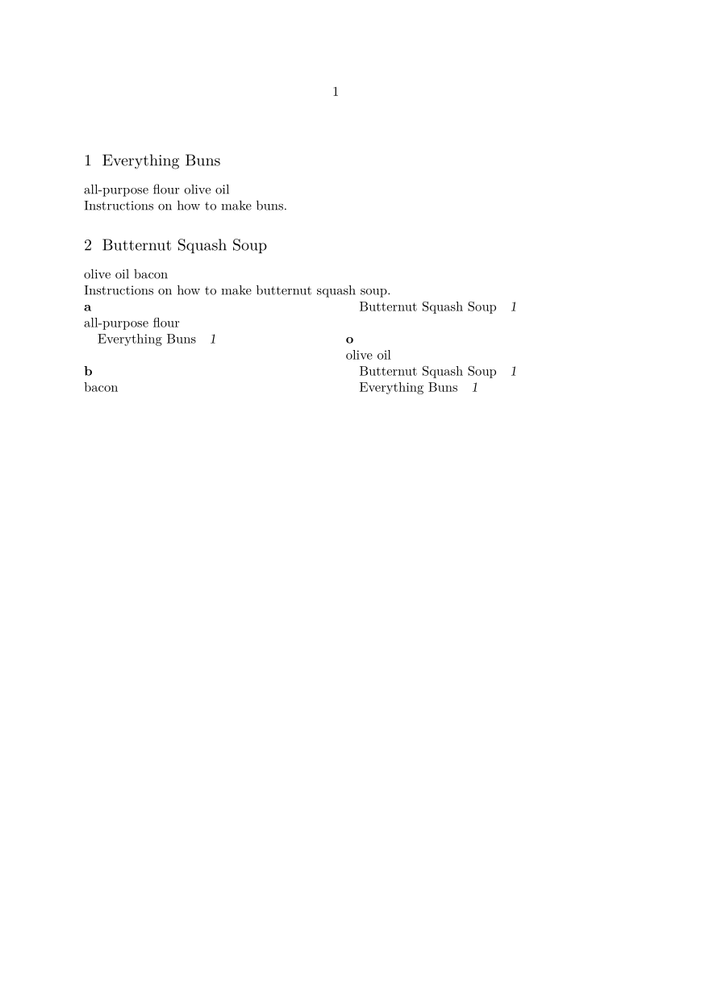

The \currentstructuretitle command allows the document to reference the name of the current document structure element. For example, this could be the chapter name, the title name, the section name, subsection name, and so forth.
Here is an example:
-
\define[2]\Index {\expanded{\index{#1+\currentstructuretitle}{#2}}} \starttext \startsection[title={Everything Buns}] \Index{all-purpose flour}{all-purpose flour} \Index{olive oil}{olive oil} Instructions on how to make buns. \stopsection \startsection[title={Butternut Squash Soup}] \Index{olive oil}{olive oil} \Index{bacon}{bacon} Instructions on how to make butternut squash soup. \stopsection \placeindex \stoptext
- 
Another way to refer to the name of a structure's attribute is using:
\namedstructurevariable{section}{title}